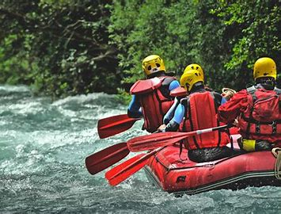

History
RiverRush Adventures was founded in 2005 by a passionate group of whitewater enthusiasts who wanted to share the thrill of rafting with adventure seekers. Starting as a small, family-run operation on the roaring rivers of the Pacific Northwest, RiverRush quickly grew into one of the most trusted rafting companies in the region. Known for their commitment to safety, top-notch equipment, and unforgettable experiences, they offer guided rafting trips for all skill levels, from beginner-friendly floats to heart-pounding class V rapids. Today, RiverRush Adventures continues to deliver adrenaline-fueled experiences for those eager to explore nature's wildest waterways

Adventure Awaits You
Our team of experienced guides and instructors are passionate about sharing their love of rafting with others. With years of experience navigating rivers around the world, they have the skills and knowledge to keep you safe and ensure you have an unforgettable adventure. From teaching you the basics of paddling to guiding you through challenging rapids, our team is dedicated to providing a fun and rewarding experience for all.